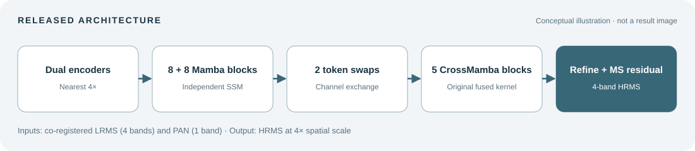

Dual encoders
Four-band LRMS is upsampled using the released nearest interpolation. MS and PAN streams each pass through convolutional and Mamba feature extractors.
Information Fusion · 2025 / Remote sensing

01 / Method
A state-space network for long-range multispectral and panchromatic feature interaction. The released model combines independent feature extraction, channel swapping, sequential shallow fusion and cross-modal Mamba.
Four-band LRMS is upsampled using the released nearest interpolation. MS and PAN streams each pass through convolutional and Mamba feature extractors.
Two original token-swap stages exchange the first half of channels between modalities. Residual streams and normalization stay in their original order.
The original sequential shallow fusion precedes five CrossMamba stages and the released refinement head.
02 / Published research
| Dataset | PSNR ↑ | SSIM ↑ | SAM ↓ | ERGAS ↓ |
|---|---|---|---|---|
| WorldView-II | 42.2354 | 0.9729 | 0.0212 | 0.8975 |
| Gaofen-2 | 47.6453 | 0.9894 | 0.0103 | 0.5286 |
| WorldView-III | 31.1551 | 0.9299 | 0.0702 | 2.8942 |
Published preprint v2, Table 1 (reduced-resolution Wald protocol). These are the original reported values, not new measurements of the refactor.
View published results and figures ↗ · Original comparison panels, Figures 2–4 ↗
Preprint Table 2, full-resolution WV2: Dλ 0.0966 · Ds 0.1272 · QNR 0.7911.
03 / Compatibility-first implementation
The modern package retains the published state-dict keys, model structure, active operators and original source. It provides an explicit inference API, strict weights loader, paired NPZ data, regression tests and a CLI.
Modern source ↗ · Documentation ↗ · CI record ↗
Published weights: GF2 ↗ · WV2 ↗ · WV3 ↗
Requires original Vim-compatible fused CUDA kernels. Full CUDA parity and original-data metrics must be verified separately.
git clone https://github.com/alexhe101/Pan-Mamba.git cd Pan-Mamba git switch refactor/modern-pytorch # Install the original Vim-compatible CUDA extensions first. python -m pip install -e './modern[dev]' python -m pytest modern/tests -v -rs
04 / Publication
@article{he2025panmamba,
title = {Pan-Mamba: Effective pan-sharpening with state space model},
author = {He, Xuanhua and Cao, Ke and Zhang, Jie and Yan, Keyu and Wang, Yingying and Li, Rui and Xie, Chengjun and Hong, Danfeng and Zhou, Man},
journal = {Information Fusion},
volume = {115},
pages = {102779},
year = {2025},
doi = {10.1016/j.inffus.2024.102779}
}